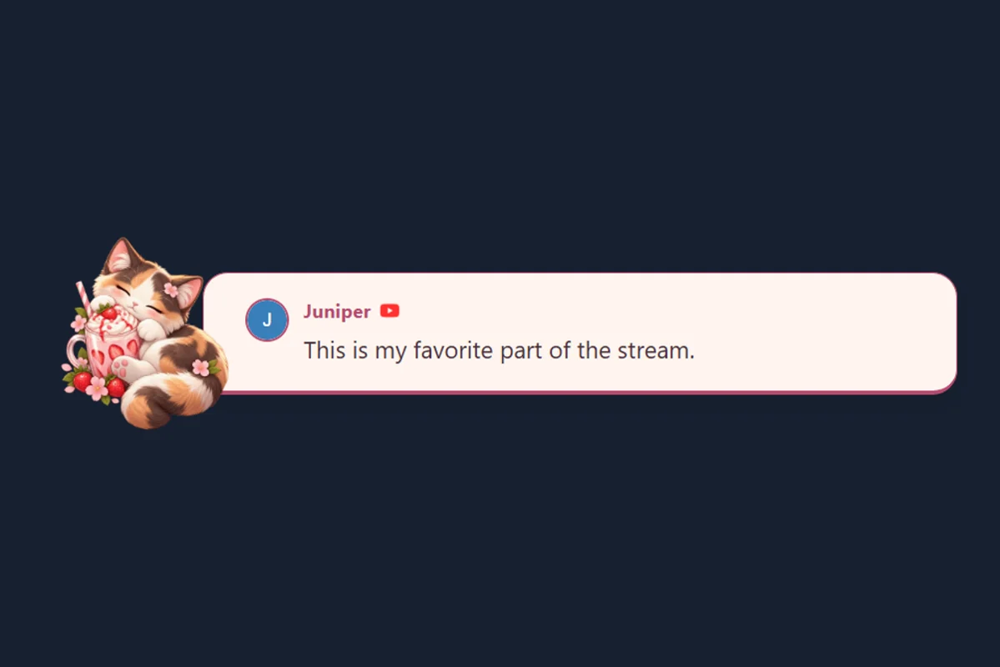
🐱 Strawberry Cat
Sleepy calico, strawberry milk and blush stationery. Includes matching chat, featured-message, and alert styles.
Preview & use packBrowse the complete visual overlay gallery, or explore custom templates and imports below.
A running feed from your connected platforms. Start with a chat template or the dock.
One message you select in the dock. Choose a featured design for interviews, Q&A, or shout-outs.
Celebrate follows, memberships, and donations. Configure animations and audio in SSN’s alert settings. Alert guide
Find the perfect template for your stream
One look across three browser sources. In the gallery, choose Use matching set, enter your session details, then copy the links for OBS. Motion is optional.

Sleepy calico, strawberry milk and blush stationery. Includes matching chat, featured-message, and alert styles.
Preview & use pack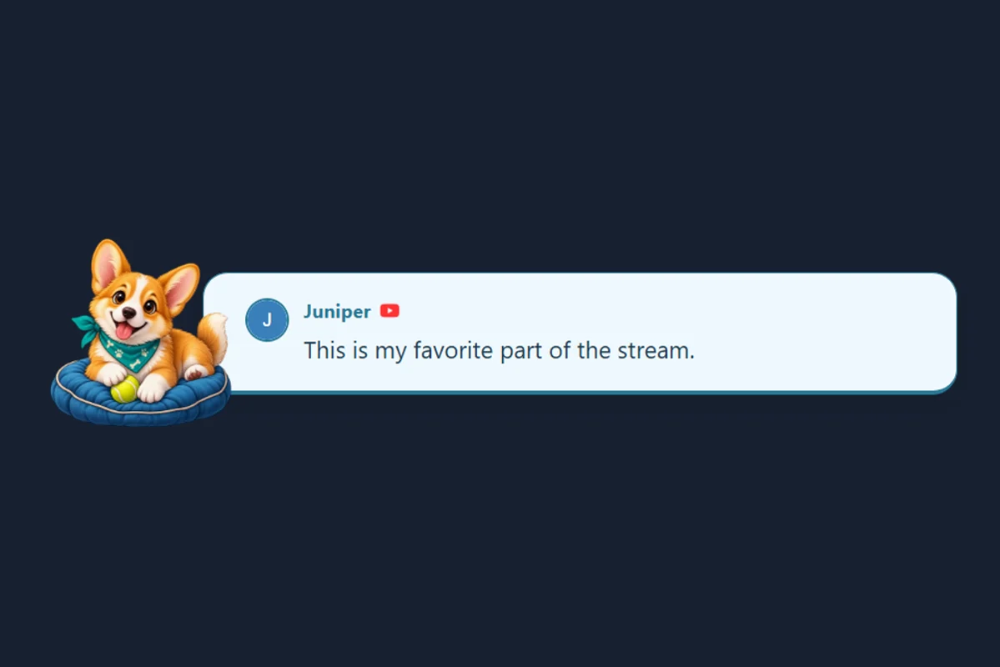
A cheerful corgi on a sky-blue postcard. Includes matching chat, featured-message, and alert styles.
Preview & use pack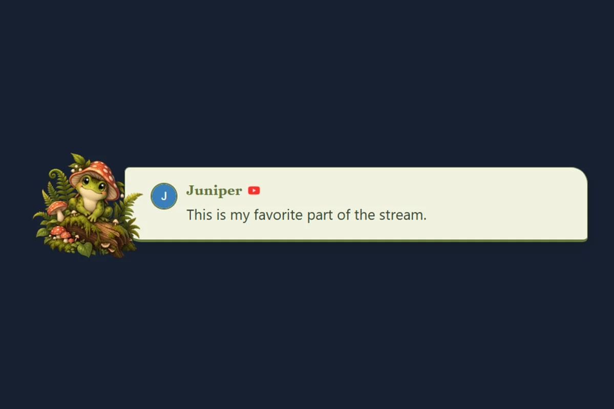
A storybook frog in a peaceful woodland. Includes matching chat, featured-message, and alert styles.
Preview & use pack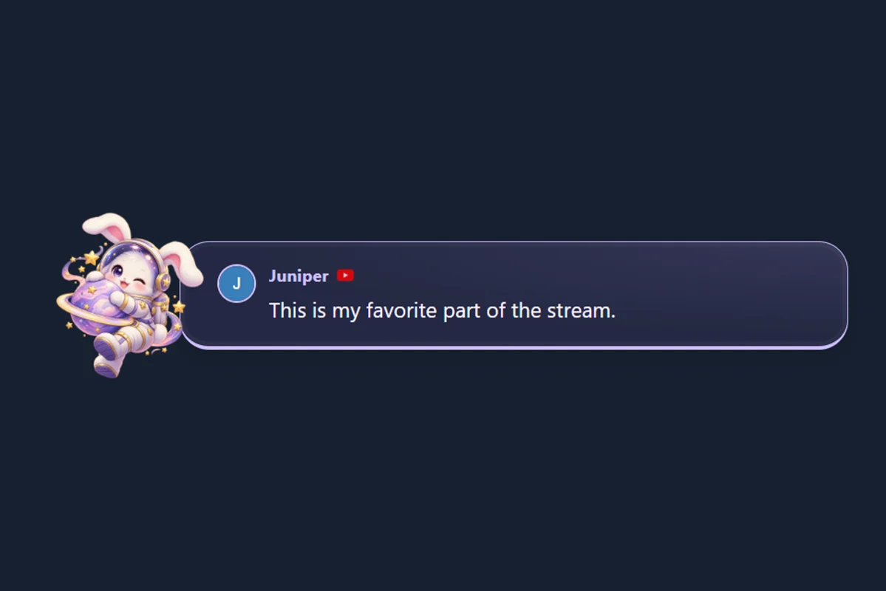
An astronaut bunny drifting through lilac stardust. Includes matching chat, featured-message, and alert styles.
Preview & use pack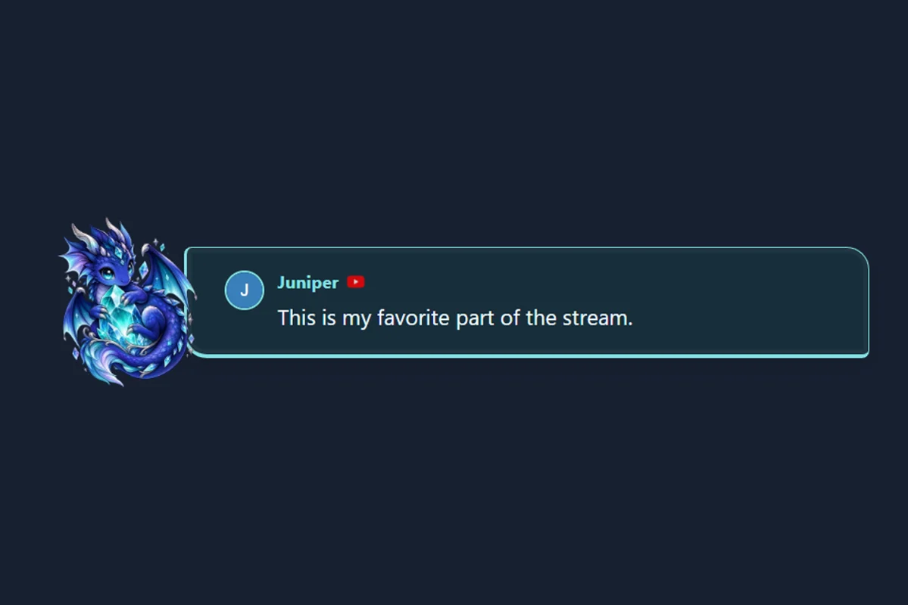
A tiny dragon with a luminous enchanted crystal. Includes matching chat, featured-message, and alert styles.
Preview & use pack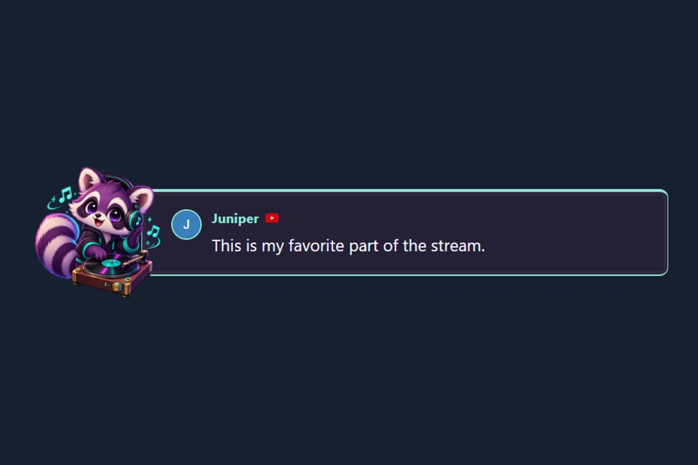
Headphone raccoon and vinyl in mint and plum. Includes matching chat, featured-message, and alert styles.
Preview & use pack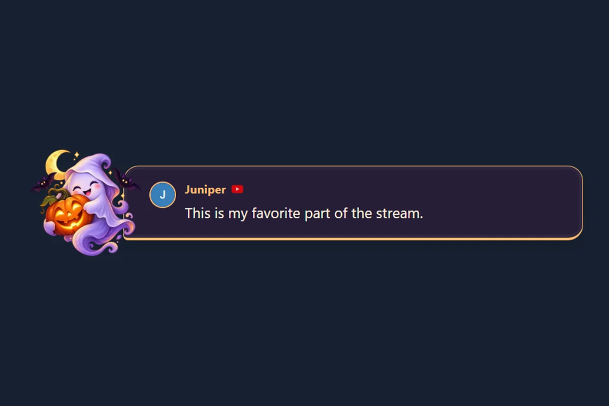
Friendly ghost, glowing pumpkin and midnight plum. Includes matching chat, featured-message, and alert styles.
Preview & use pack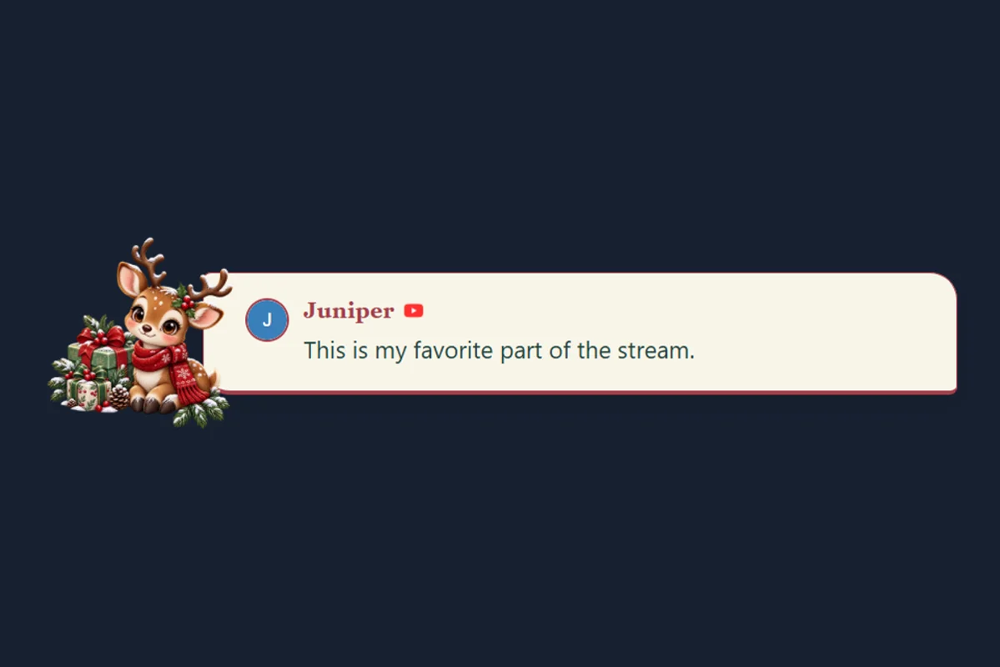
Scarf-wrapped reindeer and festive evergreen. Includes matching chat, featured-message, and alert styles.
Preview & use packComplete themed packages with documentation, sample images, and guides
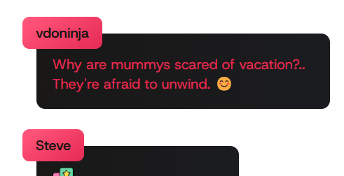
A sophisticated, fully animated theme with customizable colors and smooth transitions. Perfect for gaming streams.
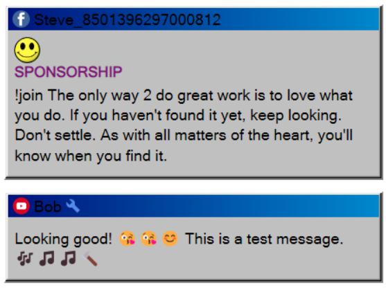
Nostalgic Windows 3.1 style chat overlay with classic window design and pixel-perfect detailing.
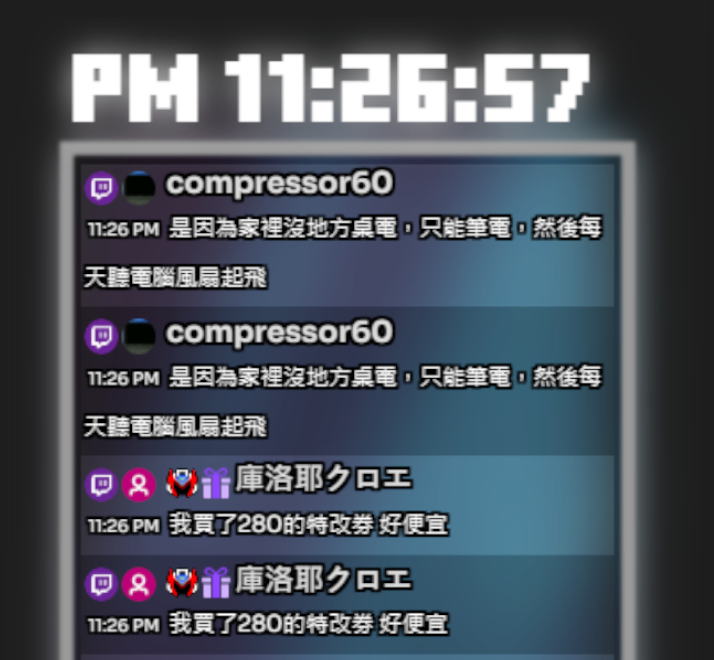
Clean, modern design with smooth animations and excellent readability. Customizable color schemes.
Ready-to-use templates that only require your session ID
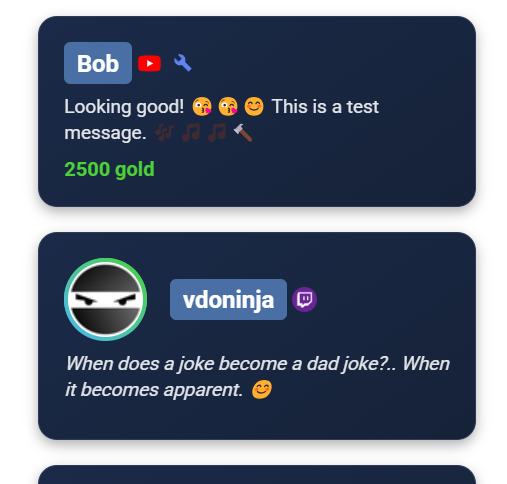
A clean, lightweight template with essential features. Perfect starting point for customization.
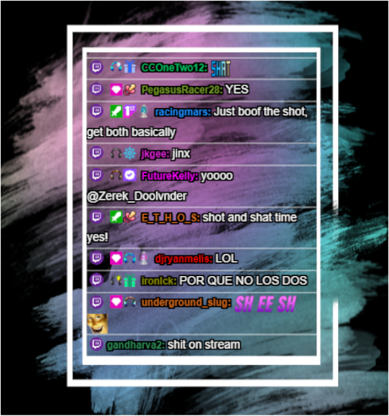
Elegant design with smooth animations and visual effects. Eye-catching yet not distracting.
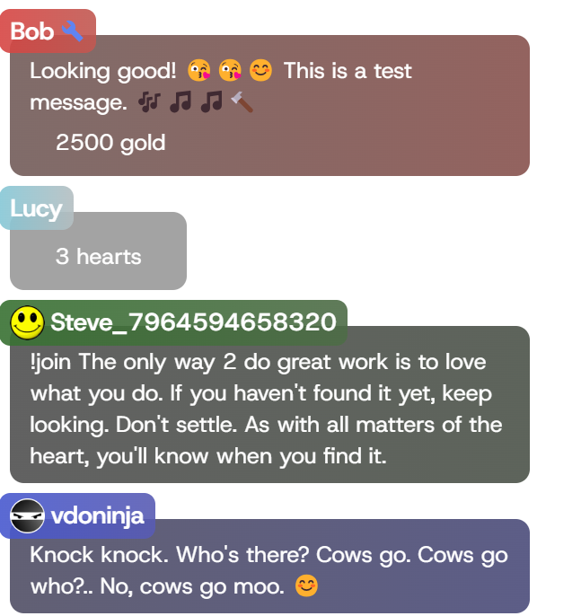
Bold, high-contrast theme designed for gaming streams with excellent visibility even in fast-paced content.
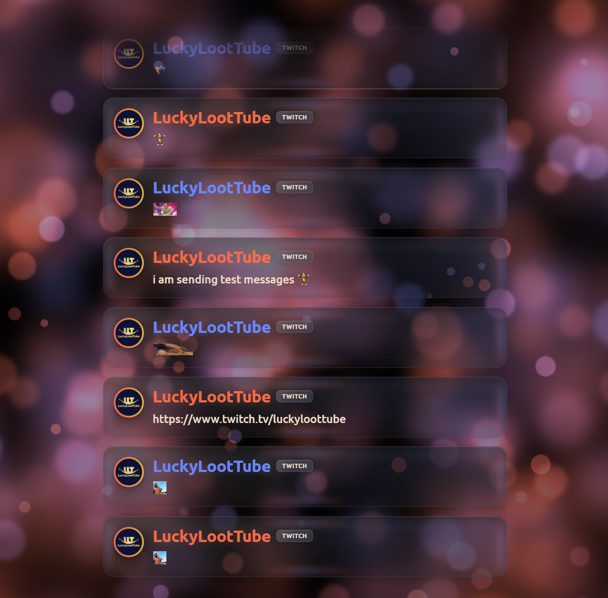
Sleek animated liquid-glass style chat overlay with smooth animations and cool emote rendering.
Templates that work with YouTube CSS styles
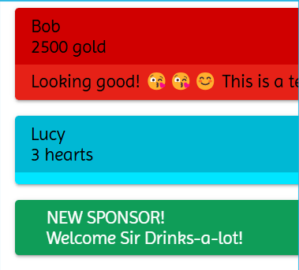
Use CSS designed for YouTube with our YouTube-structured overlay page. Compatible with Septapus styles.
Starting points for creating your own custom overlays
Minimal code needed to create your own overlay from scratch. Perfect for developers and LLM-assisted coding.
A more complete starting point with comments and documentation to help you build your own custom overlays.
Created an awesome template for Social Stream Ninja? Share it with the community by submitting a pull request to our GitHub repository.
Submit on GitHubThis works with both the SSN Windows desktop app and Chrome extension—no code editing is required.
Open your platform sources in the SSN app or extension, then send a test message. Continue only after it appears in the SSN dock.
Use the ZIP, folder, or files supplied by the widget designer. A useful export normally contains HTML, CSS, JavaScript, fields/data, and assets. A screenshot or StreamElements overlay URL is not enough.
Open the importer and choose the ZIP, folder, or files. It detects the widget parts and immediately shows a demo preview.
Open Widget ImporterOpening the importer from the SSN popup fills the session ID and password automatically. If you opened it directly, copy them from Session Options in the app or extension. You enter the session ID once in the importer; it is saved inside the downloaded file.
If the imported widget provides compatible settings, use Message history to turn off timed removal or change how many messages stay on screen. This changes widget settings, not its code.
Demo Preview checks the design with sample messages. Live Preview checks the session using real chat from the running SSN app or extension.
Click Download OBS HTML. In OBS, add a Browser Source, enable Local file, and select the downloaded HTML file. Do not add the session ID or edit the URL in OBS. Keep SSN running while streaming; the importer and StreamElements may be closed.
Review the detected files in the importer and use Advanced file selection if it chose the wrong HTML, CSS, or JavaScript.
Confirm chat reaches the SSN dock and that the session ID and optional password match exactly.
Use the downloaded HTML file—not the importer page, original ZIP, or StreamElements URL—then refresh the OBS Browser Source.
Follow these simple steps to get started
Browse the template library and select one that fits your stream style. Use the screenshot gallery to compare designs; most built-in templates work directly from a URL, with no download.
Replace YOURSESSIONID in the template URL with your actual Social Stream Ninja session ID found under Session Options in the SSN app or extension. Include the optional password if your session uses one.
https://socialstream.ninja/themes/pretty.html?session=YOURSESSIONID
Add the modified URL as a Browser Source in your streaming software:
Personalize your overlay with custom CSS in one of these ways:
&css=URL_TO_YOUR_CSS_FILE to your template URL&b64css=YOUR_BASE64_ENCODED_CSSStart with a working overlay, then change its appearance.
Use OBS Browser Source Custom CSS for colors, spacing, and typography. Keep the original SSN URL and connection.
Have a StreamElements chat widget export? Open the StreamElements converter, preview it, then download the OBS HTML. Use the original ZIP or files, not a screenshot or overlay URL. See setup below.
Copy a working starter and edit its HTML, CSS, and JavaScript. Quick start · Developer guide · Event fields
For trigger-based behavior, start with the Event Flow editor and alert effect rules before writing a new overlay.
Choose a starting point, copy the prompt, and replace the bracketed design details. Attach source files if your AI cannot read links. Leave your private session ID and password out of the conversation.
Converting a more complex widget? Use the full StreamElements / Streamlabs conversion prompt.
Learn how to create a custom chat overlay with AI assistance